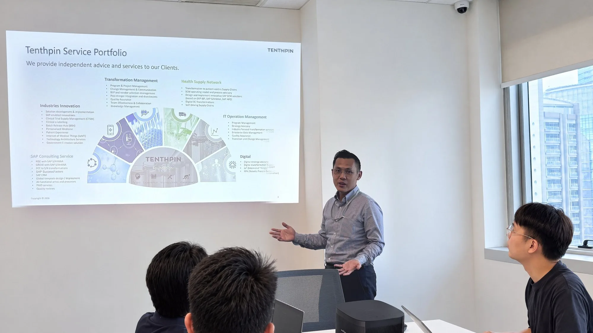
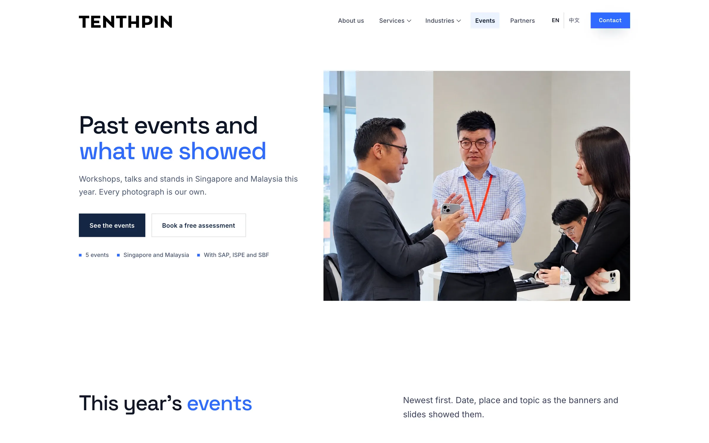
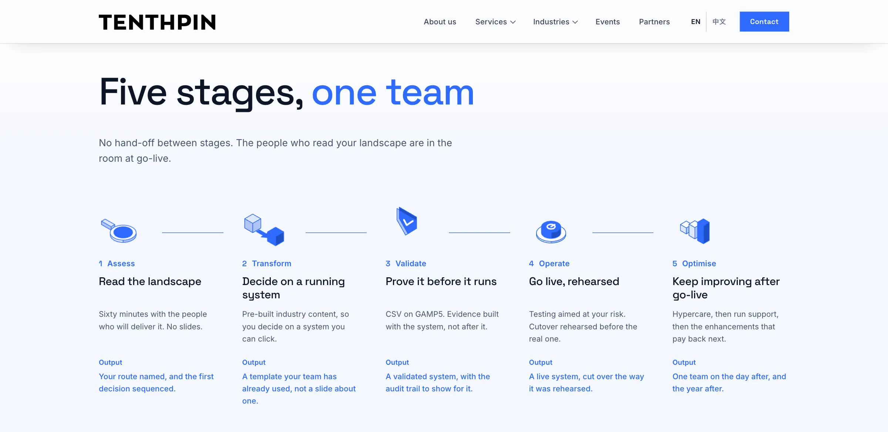
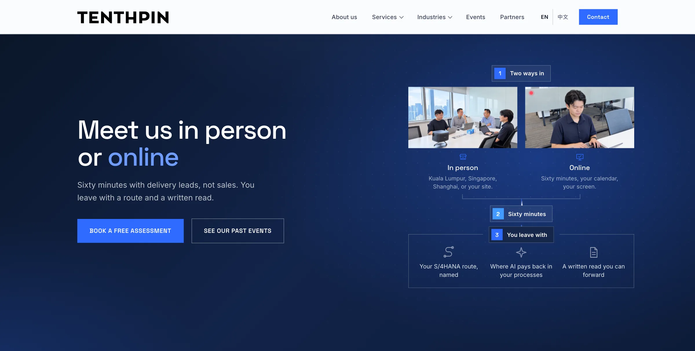
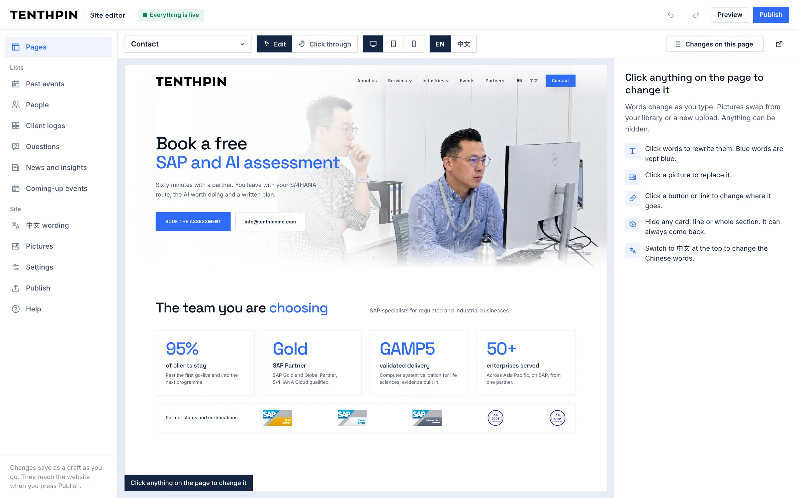
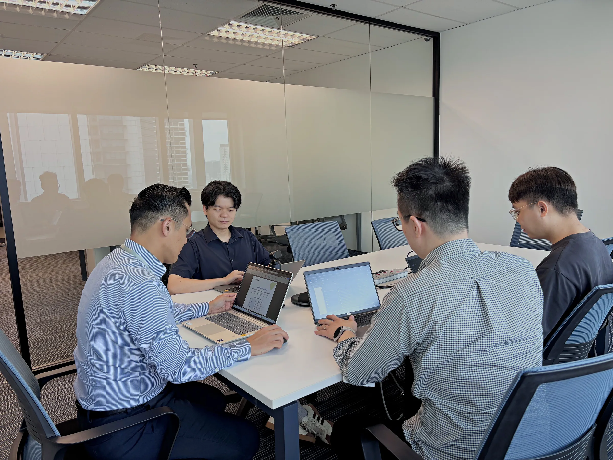
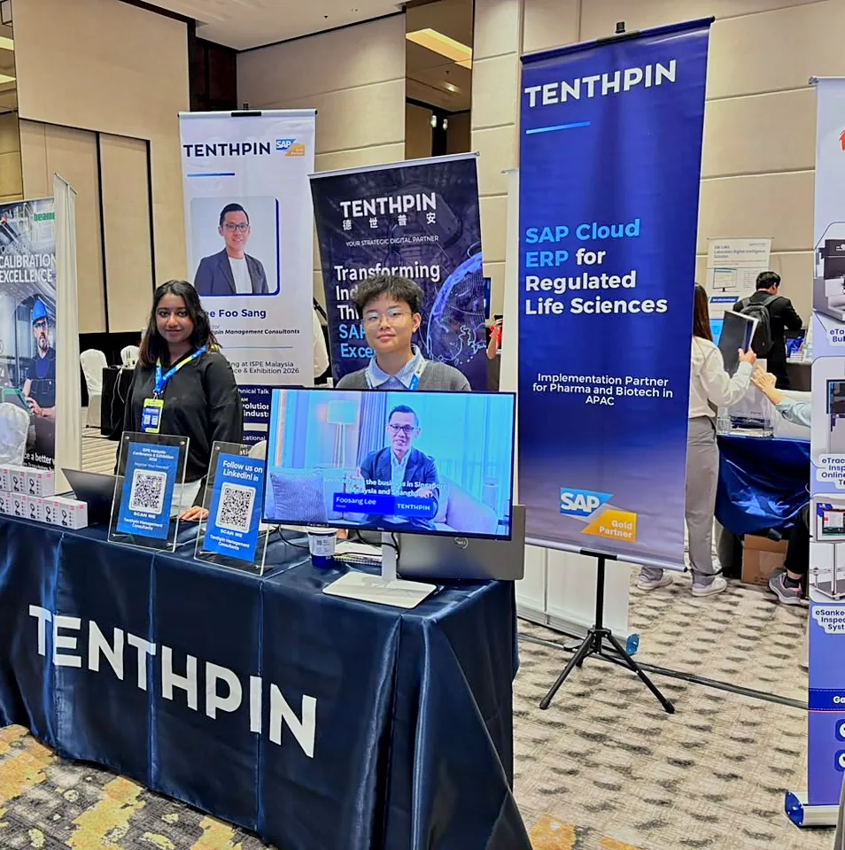

Back to work
Tenthpin MC

A website of thirty pages, SEO and a site editor for an SAP partner, built to be found on Google and cited by AI search.
Tenthpin MC had to stand apart from the global tenthpin.com: the SAP partner that wins the search in Malaysia and Southeast Asia.

The Past events page: Tenthpin's own events, in its own photographs.


The site editor changes the website without touching the code: words, pictures, links, lists, the Chinese, and the page titles Google reads.


